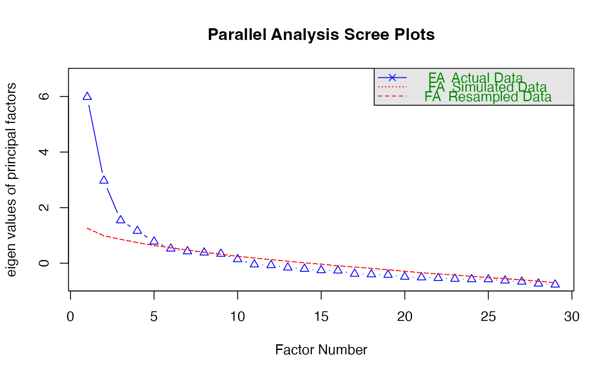

This function retrieves the latent factors and their variable loadings which
can be used as R objects to perform other analysis.
Value
A list with the following components:
Latent_framedata.frameof latent factors based on the variables loadings.Latent_1data.frameof variables in Latent factor 1 with their loadings.Latent_2data.frameof variables in Latent factor 2 with their loadings.Latent_3data.frameof variables in Latent factor 3 with their loadings.Latent_4data.frameof variables in Latent factor 3 with their loadings.Latent_5data.frameof variables in Latent factor 5 with their loadings.Latent_6data.frameof variables in Latent factor 6 with their loadings.Latent_7data.frameof variables in Latent factor 7 with their loadings.Latent_8data.frameof variables in Latent factor 8 with their loadings.Latent_9data.frameof variables in Latent factor 9 with their loadings.
Examples
library(psych)
library(readr)
Data <- Quicksummary
GGn <- names(Data)
GG <- ncol(Data)
GGx <- c(paste0('x0', 1 : 9), paste("x", 10 : ncol(Data), sep = ""))
names(Data) <- GGx
lll <- fa.parallel(Data, fm = "minres", fa = "fa")

#> Parallel analysis suggests that the number of factors = 5 and the number of components = NA
dat <- fa(Data, nfactors = lll[["nfact"]], rotate = "varimax",fm = "minres")
model_factors(data = dat, DATA = Data)
#>
#> Loadings:
#> MR1 MR2 MR3 MR5 MR4
#> x11 0.513
#> x12 0.611
#> x13 0.559
#> x20 0.556
#> x24 0.617 0.527
#> x25 0.718
#> x26 0.595
#> x01 0.625
#> x02 0.783 0.541
#> x10 0.631
#> x28 -0.610
#> x04 0.740
#> x05 0.792
#> x06 0.720
#> x08 0.594 0.452
#> x17 0.667
#> x18 0.527
#> x19 0.592
#> x03 0.523
#> x07 0.417
#> x09 0.403
#> x14
#> x15 0.480
#> x16
#> x21 0.492
#> x22 0.481
#> x23 -0.440 0.499
#> x27 0.465
#> x29
#>
#> MR1 MR2 MR3 MR5 MR4
#> SS loadings 3.854 2.895 2.786 2.441 2.203
#> Proportion Var 0.133 0.100 0.096 0.084 0.076
#> Cumulative Var 0.133 0.233 0.329 0.413 0.489
#> $Latent_frame
#> # A tibble: 103 × 5
#> MR1 MR2 MR3 MR4 MR5
#> <dbl> <dbl> <dbl> <dbl> <dbl>
#> 1 16.7 6.28 2.99 11.2 10.4
#> 2 18.6 6.28 2.99 9.76 10.4
#> 3 16.3 3.23 2.99 11.5 9.22
#> 4 16.7 6.28 2.99 11.2 10.4
#> 5 18.1 5.65 2.99 11.2 10.4
#> 6 18.1 6.28 2.99 11.2 10.4
#> 7 19.1 6.28 2.25 11.2 9.22
#> 8 18.1 5.65 2.99 11.2 10.4
#> 9 18.1 5.65 2.99 11.2 10.4
#> 10 19.1 6.28 2.25 11.2 9.22
#> # ℹ 93 more rows
#>
#> $Latent_1
#> MR1 loading
#> 1 x11 0.513
#> 2 x12 0.611
#> 3 x13 0.559
#> 4 x20 0.556
#> 6 x25 0.718
#> 7 x26 0.595
#> 8 x15 0.480
#> 9 x21 0.492
#>
#> $Latent_2
#> MR2 loading
#> 1 x01 0.625
#> 3 x10 0.631
#> 4 x28 -0.610
#>
#> $Latent_3
#> MR3 loading
#> 1 x04 0.740
#> 2 x05 0.792
#> 3 x06 0.720
#>
#> $Latent_4
#> MR4 loading
#> 1 x24 0.527
#> 2 x02 0.541
#> 3 x08 0.452
#> 4 x03 0.523
#> 5 x22 0.481
#> 6 x23 0.499
#> 7 x27 0.465
#>
#> $Latent_5
#> MR5 loading
#> 1 x17 0.667
#> 2 x18 0.527
#> 3 x19 0.592
#> 4 x07 0.417
#> 5 x09 0.403
#>
#> $Latent_6
#> NULL
#>
#> $Latent_7
#> NULL
#>
#> $Latent_8
#> NULL
#>
#> $Latent_9
#> NULL
#>